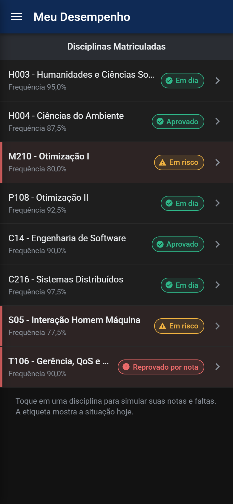
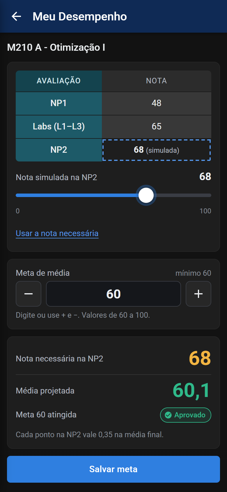
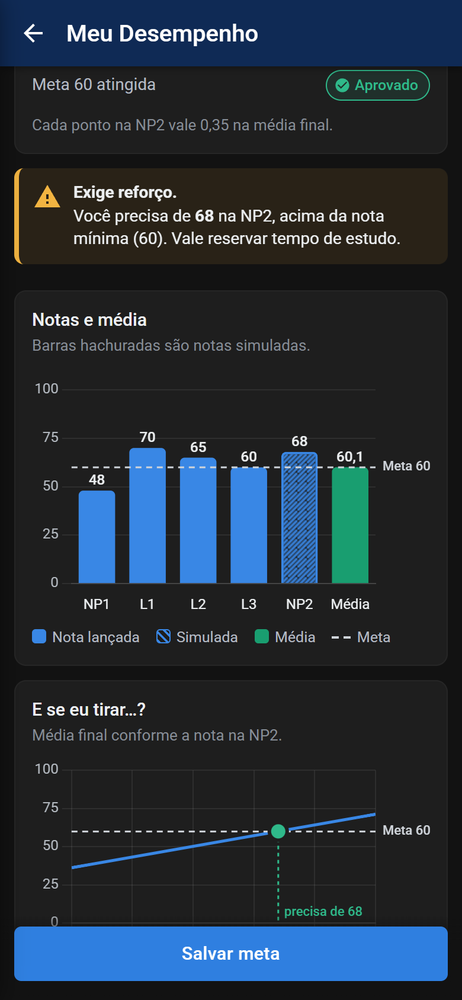

Por quê. Lucas, aluno do 3º período, está no limite da média em Otimização I e já faltou algumas aulas. Hoje ele vê notas e faltas no app, mas faz a conta na calculadora e não sabe quantas aulas ainda pode perder.
Como funciona no app. O item Meu Desempenho entra no menu lateral (Aproveitamento Escolar), e a tela Notas ganha o botão simular. O aluno escolhe a disciplina, ajusta a nota simulada e a meta e vê na hora a nota necessária, a média projetada, gráficos, a frequência e as faltas restantes. Alertas avisam de meta impossível ou risco por falta, e a meta pode ser salva.


